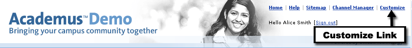

To begin personalizing UNICON Academus, locate and click the Customize link in the upper-right corner of the portal window. For some Academus deployments the feature may be labeled Preferences.

There are several links at the top of the page when you are in customization mode.
- Change Content & Layout- This feature allows you to add or remove tabs, columns, and channels from your layout. You can also rearrange or rename any non-restricted tabs, columns, and channels in your layout.
- Pick Colors - This will change the colors, and style of UNICON Academus. The styles available for selection will vary by institution.
- Manage Fragments - This option will be available for a limited number of users granted privileges to manage fragments within the portal.
- Change Languages - Use this link to change the language in your view.